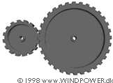
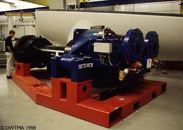

 Gearboxes
for Wind Turbines
Gearboxes
for Wind Turbines

Why
Use a Gearbox?
The power from the rotation of the wind turbine rotor is transferred
to the generator through the power
train, i.e. through the main shaft, the gearbox and the high
speed shaft, as we saw on the page with the Components
of a Wind Turbine.
 But why use a gearbox? Couldn't we just drive
the generator directly with the power from the main shaft?
But why use a gearbox? Couldn't we just drive
the generator directly with the power from the main shaft?
 If we used an ordinary generator, directly
connected to a 50 Hz AC (alternating
current) three phase grid with two, four, or six poles, we
would have to have an extremely high speed turbine with between
1000 and 3000 revolutions per minute (rpm), as we can see in
the page on Changing Generator Rotational
Speed. With a 43 metre rotor diameter that would imply a
tip speed of the rotor of far more than twice the speed of sound,
so we might as well forget it.
If we used an ordinary generator, directly
connected to a 50 Hz AC (alternating
current) three phase grid with two, four, or six poles, we
would have to have an extremely high speed turbine with between
1000 and 3000 revolutions per minute (rpm), as we can see in
the page on Changing Generator Rotational
Speed. With a 43 metre rotor diameter that would imply a
tip speed of the rotor of far more than twice the speed of sound,
so we might as well forget it.
 Another possibility is to build a slow-moving
AC generator with many poles. But if you wanted to connect the
generator directly to the grid, you would end up with a 200 pole
generator (i.e. 300 magnets) to arrive at a reasonable rotational
speed of 30 rpm.
Another possibility is to build a slow-moving
AC generator with many poles. But if you wanted to connect the
generator directly to the grid, you would end up with a 200 pole
generator (i.e. 300 magnets) to arrive at a reasonable rotational
speed of 30 rpm.
 Another problem is, that the mass of the
rotor of the generator has to be roughly proportional to the
amount of torque (moment, or turning force) it has to handle.
So a directly driven generator will be very heavy (and expensive)
in any case.
Another problem is, that the mass of the
rotor of the generator has to be roughly proportional to the
amount of torque (moment, or turning force) it has to handle.
So a directly driven generator will be very heavy (and expensive)
in any case.
Less
Torque, More Speed
The practical solution, which is used in the opposite direction
in lots of industrial machinery, and in connection with car engines
is to use a gearbox. With a gearbox you convert between slowly
rotating, high torque power which you get from the wind turbine
rotor - and high speed, low torque power, which you use for the
generator.
 The gearbox in a wind turbine does not "change
gears". It normally has a single gear ratio between the
rotation of the rotor and the generator. For a 600 or 750 kW
machine, the gear ratio is typically approximately 1 to 50.
The gearbox in a wind turbine does not "change
gears". It normally has a single gear ratio between the
rotation of the rotor and the generator. For a 600 or 750 kW
machine, the gear ratio is typically approximately 1 to 50.
 The picture below shows a 1.5 MW gearbox
for a wind turbine. This particular gearbox is somewhat unusual,
since it has flanges for two generators on the high speed side
(to the right). The orange gadgets just below the generator attachments
to the right are the hydraulically operated emergency disc brakes.
In the background you see the lower part of a nacelle for a 1.5
MW turbine.
The picture below shows a 1.5 MW gearbox
for a wind turbine. This particular gearbox is somewhat unusual,
since it has flanges for two generators on the high speed side
(to the right). The orange gadgets just below the generator attachments
to the right are the hydraulically operated emergency disc brakes.
In the background you see the lower part of a nacelle for a 1.5
MW turbine.

© Copyright 2000 Soren Krohn. All rights reserved.
Updated 25 October 2000
http://www.windpower.org/tour/wtrb/powtrain.htm